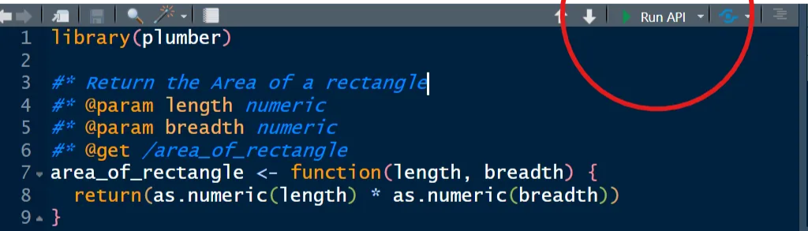
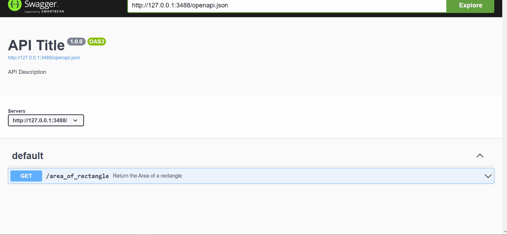
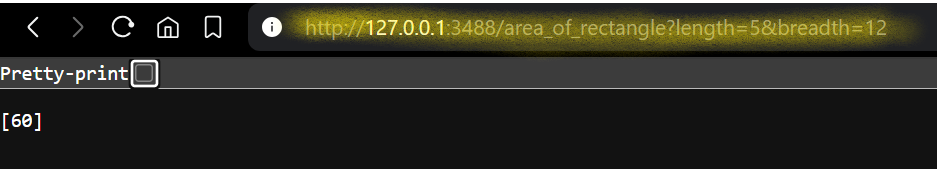

The primary aim of machine learning is to learn certain patterns from available data and to make decisions based on reliable facts.
Imagine building a machine learning model, and you get good accuracy. That does not end there; you must deploy this model for clients to interact with. Maybe it’s a classification or a regression model. What use do you think the model is if it’s just on your PC?
Deploying machine learning models puts them into real-life scenarios, allowing you to monitor them in real-time. This is also important as you can easily track anomalies through the model’s accuracy metrics.
In this article, you will learn how to deploy a machine-learning model using Plumber, an R package for developing APIs. You will build a Facebook prophet model forecasting the closing price of Bitcoin and deploy it as a Plumber API such that when a date is given, you can get the closing price for that particular date.
Prerequisites
To follow this tutorial, download the Bitcoin dataset containing Bitcoin’s closing price information from January 1st, 2020, to April 19th, 2021. You also need to install the following Python libraries.
plumber- for generating APIsprophet- for time series analysislubridate- for date manipulationdplyr- for data manipulation
What is Plumber?
R plumber is an R package for creating web APIs by decorating your R functions. For example, you can have a normal function that calculates the area of a rectangle.
area_of_rectangle <- function(length, breadth) {
return(length * breadth)
}And convert the function into an API by decorating it with roxygen2comments #*.
library(plumber)
#* Return the Area of a rectangle
#* @param length numeric
#* @param breadth numeric
#* @get /area_of_rectangle
function(length, breadth) {
return(as.numeric(length) * as.numeric(breadth))
}#* Return the Area of a rectangleis a comment describing what the function does.#* @param length numericindicates that the function takes a numeric parameter called length.#* @param length numericalso shows that the function takes another numeric parameter called breadth.#* @get/area_of_rectangletells Plumber to create a web endpoint at the URL path/area_of_rectangle. The function is triggered when this URL is visited with the correct parameters.
To run the newly created API, click Run API just above the R script to open the API endpoint docs automatically.

You can interact with the API’s automatic documentation and see if they return valid results or errors.

You can also assess the value of the area directly on your browser through the following URL <your_local_host>/area_of_rectangle?length=5&breadth=12. Because the endpoint is a GET verb, the function parameters are known as query parameters and are provided in the URL path after a question mark.

Creating a Plumber project
To create a plumber project, go to File, then New Project. Under the New Project Wizard, select New Directory and the New Plumber API Project.

Once you have created the Plumber API Project, you will see a file called plumber.R . This is where you will write all the logic needed to create the API.
Building the Forecasting Model
Run the following code in the plumber.R to load the libraries and data.
library(plumber)
library(prophet)
library(dplyr)
library(lubridate)
# Load and preprocess the data
bitcoin_data <- read.csv("gemini_BTCUSD_2020_1min.csv")
head(bitcoin_data)
Copy and paste the following code below to build the forecasting model.
# Ensure the Date column is in datetime format
bitcoin_data$Date <- mdy_hm(bitcoin_data$Date)
# Extract only the date part (ignoring time)
bitcoin_data$Date <- floor_date(bitcoin_data$Date, unit = "day")
# Calculate the daily average of the 'Close' prices
daily_data <- bitcoin_data |>
group_by(Date) |>
summarise(Close = mean(Close))
# Prepare the data for Prophet
prophet_data <- data.frame(ds = daily_data$Date, y = daily_data$Close)
# Train the Prophet model
model <- prophet(prophet_data)Check out the following article to learn more about building forecasting models with the Facebook Prophet.
Creating the Plumber API
Inside the plumber.R file, copy and paste the following code.
#* Predict closing prices for a given date
#* @param date A future date (format: YYYY-MM-DD) to predict closing price for
#* @get /predict
function(date) {
# Convert the input date to a Date object
input_date <- ymd(date)
# Get the last available date in the dataset
last_date <- ymd(max(prophet_data$ds))
# Validate the input date
if (is.na(input_date)) {
return(list(
error = "Invalid date format. Please provide a date in YYYY-MM-DD format."
))
}
if (input_date <= last_date) {
return(list(
error = "Please provide a future date beyond the last available date in the dataset.",
last_available_date = as.character(last_date)
))
}
# Calculate the number of days to forecast
days_to_forecast <- input_date - last_date
# Check if the number of days to forecast is valid
if (days_to_forecast <= 0) {
return(list(
error = "The calculated forecast period is negative. Please check your input."
))
}
# Generate future predictions
future <- make_future_dataframe(model, periods = days_to_forecast)
forecast <- predict(model, future)
# Find the prediction for the input date
forecast_for_date <- forecast |>
filter(ds == input_date) |>
select(ds, yhat, yhat_lower, yhat_upper)
# Return the prediction for the given date
if (nrow(forecast_for_date) == 0) {
return(list(
error = "Unable to generate forecast for the given date. Please try a valid future date."
))
} else {
return(forecast_for_date)
}
}The above function predicts the closing price of Bitcoin for a specified future date. It uses a GET verb at the endpoint /predict and takes the argument date in the format YYYY-MM-DD.
First, input_date is converted to a date-time object using the lubridate function ymd(). The same is done for the last_date in the dataset.
The input_date is also validated in case no date was given, or the date given is less than or equal to the last_date in the dataset.
The days_to_forecast is calculated by subtracting the last date from the input date, which is validated if it is less than or equal to 0.
The predict function makes future predictions by taking the model and the future data frame as arguments.
Finally, the date, actual predictions of the input data, and confidence intervals are filtered from the forecast data frame and returned.
Let’s run the API to interact with the forecast model API docs.

Hosting
R Plumber provides various ways to host your API. You can use Posit Connect, which is recommended as the most straightforward deployment method, Digital Ocean, or deploy using Docker. Once you have hosted your API, clients can interact with it to get real-time predictions. You can further set up tests and CI/CD for automated testing to ensure that as your application grows large, it does not break.
Conclusion
In this article, you have learned how to use R Plumber to deploy your machine-learning models as an API. You can integrate these APIs into web applications and allow users to interact with the model. This way, you solve business problems and see how your model performs on real-world data. If you want to dive more into developing machine learning APIs, here are useful resources from which you can learn.
Recreating the Shiny App tutorial with a Plumber API + React
How to put an R model in production
Deploying a Machine Learning Model Using Plumber and Docker
How to deploy a Tensorflow Model in R with Plumber
Deploying to RStudio Connect: A Beginner’s Guide
**How to Make an R REST API: A Beginners Guide to Plumber**
Need Help with Data? Let’s Make It Simple.
At LearnData.xyz, we’re here to help you solve tough data challenges and make sense of your numbers. Whether you need custom data science solutions or hands-on training to upskill your team, we’ve got your back.
📧 Shoot us an email at admin@learndata.xyz—let’s chat about how we can help you make smarter decisions with your data.